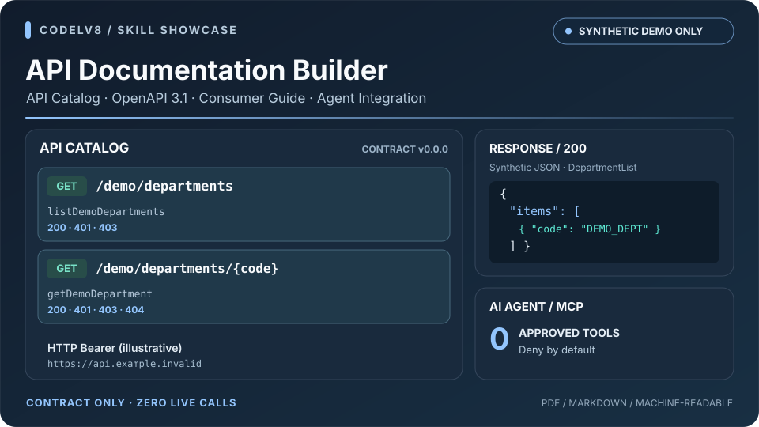

API Catalog
รายการ endpoint และ Operation ID
ตัวอย่าง API Documentation Suite จาก Synthetic OpenAPI Contract

| Method / path | Operation ID | Responses |
|---|---|---|
GET /demo/departments | listDemoDepartments | 200, 401, 403 |
GET /demo/departments/{code} | getDemoDepartment | 200, 401, 403, 404 |
HTTP Bearer แบบสมมุติ; ไม่มี Token issuer จริง ไม่ระบุ scopes หรือ SLA
curl --request GET 'https://api.example.invalid/demo/departments' \ --header 'Authorization: Bearer YOUR_ACCESS_TOKEN' \ --header 'Accept: application/json'
{"items":[{"code":"DEMO_DEPT"}]}ตัวอย่างสร้างจาก Contract ไม่ได้มาจากการเรียก API จริง
PDF เรนเดอร์จาก Markdown ในขั้นตอน Build ของ GitHub Pages หากใช้งานจาก clone แบบ offline ให้สร้างไฟล์ PDF ด้วยคำสั่งในส่วนท้ายก่อนเปิดลิงก์ PDF
รายการ endpoint และ Operation ID
Request / Response fields และประเภทข้อมูล
รายละเอียด Contract และ Response status
คู่มือเริ่มต้น พร้อมตัวอย่าง Request/Response สมมุติ
สิทธิ์ ข้อจำกัด และ Privacy
Tool manifest แบบ deny-by-default
รันจาก root ของ repository ด้วย Python และ dependency สำหรับ PDF ที่ระบุใน README ของคลัง Skill ไม่ต้องเชื่อมต่อฐานข้อมูลหรือ API
python scripts/build-documentation-examples.py
การตรวจแบบอัตโนมัติเป็นมาตรการเสริม ต้องตรวจความปลอดภัยและขอบเขตด้วยตนเองก่อนใช้กับข้อมูลจริง
อ่าน SKILL.md